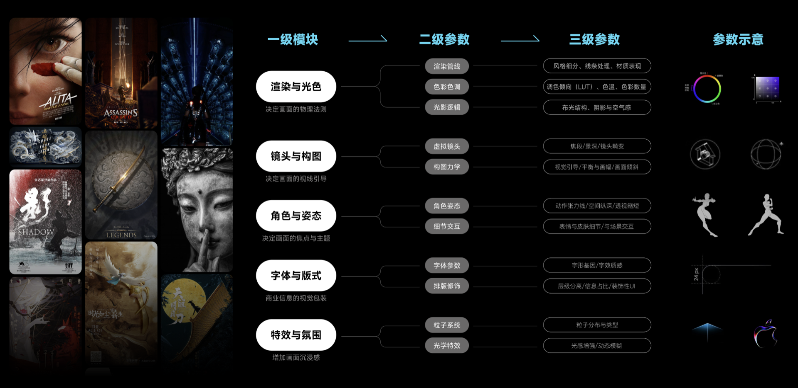

AI提升设计质量：设计标准化生产
通过引入 AI 工作流，在保障高品质视觉输出的同时，降低对特定画师或动画师的依赖，实现设计质量的标准化、可复制与规模化交付。
1. 手绘类需求的 AI 生产管线
针对过往耗时高、风格一致性难保障的手绘插画需求，搭建专属 AI 绘画模型与工作流。通过精细化 Prompt 调校与垫图（参考图）约束，稳定控制色彩、光影、透视与角色特征，使插画输出在不同批次间保持高度一致，将手绘质量从“依赖个人发挥”升级为“系统化保障”。
该管线可模拟团队多位设计师的画风，并结合 n8n 自动化编排，实现从需求触发、生成到交付的无设计师流程化生产，有效支撑《逆水寒》《炉石传说》等游戏 IP 与“用户合影二创”等互动玩法的规模化落地。


2. 动画类需求的 AI 生产管线
在传统资源位设计中，受人力与成本限制，难以在所有点位都实现高精度的动效呈现。通过引入 AI 生成基础动效素材的工作流，可快速补齐动效能力覆盖面，在不显著增加制作成本的前提下，整体提升设计质感与一致性。
以小程序下拉彩蛋资源位为例，将原本的静态 KV 升级为轻量“微呼吸”动效，不仅显著增强视觉表现与沉浸感，也通过模板化参数与流程约束，避免因不同制作人员水平差异导致的动效质量不一致问题。

3. 视觉设计类需求的 AI 生产管线
在常规运营活动设计中，基于对游戏视觉风格的深度洞察，沉淀并建立了严格的美学规范与专用资产库。通过提示词逆向工程与参数调优，能够快速生成符合游戏调性的背景、道具与合成素材，确保风格统一、产出稳定。
在专业审美把控的前提下，结合 ComfyUI 管线进行可控的分层生成与精准合成，既保障了高品质的视觉呈现，也显著缩短了从创意构思到视觉执行的整体周期。
